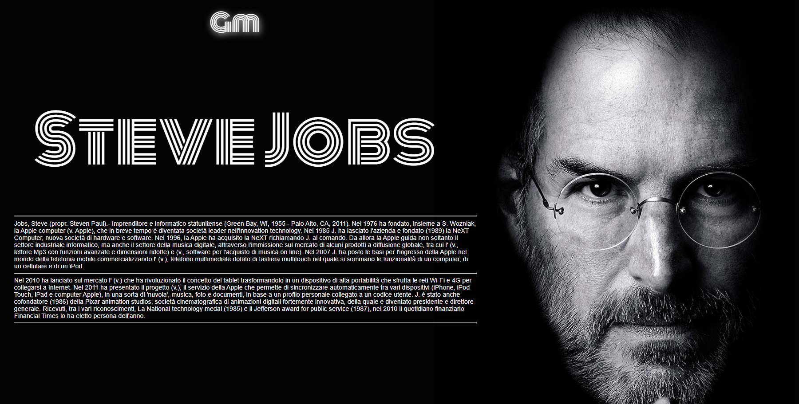
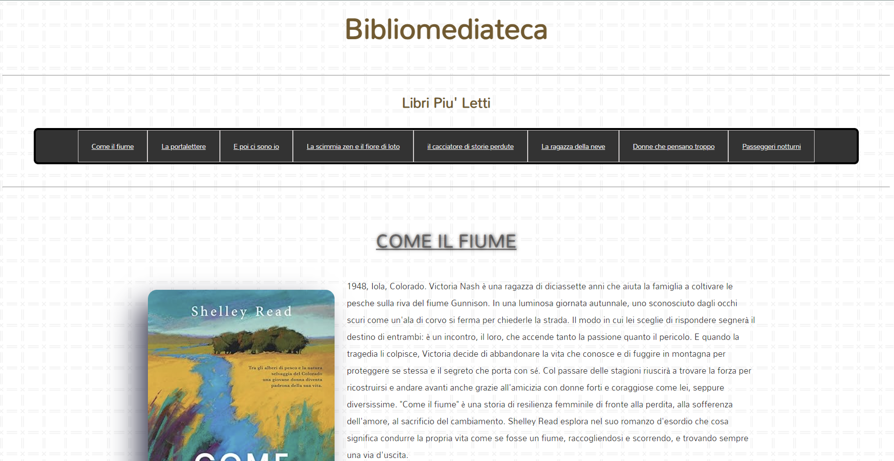

Steve Jobs
Questo è un sito descrittivo su Steve Jobs è stato creato utilizzando un Grid layout. È
responsive al 100%.
Il sito è strutturato verticalmente,sono bastate 3 colonne e 11 righe: alcuni elementi, come la scritta
laterale apple prendono 3
righe, essendo una scritta verticale. Di seguito ho inserito una brevissima timeline verticale con 3
dispositivi.
Per concludere, nel footer ho inserito un form per l'iscrizione alla newsletter da parte dell'utente.
Studio medico

Questo sito di uno studio medico è stato realizzato con un layout a blocchi:
semplicemente mettendo un
div sotto l'altro, ognuno contenente una sezione. Ho applicato delle semplici ombre al titolo e alle
immagini per dare un senso di profondità.
Nell'ultima sezione ho inserito un form per raccogliere i dati dell'utente, formattando gli
input text, input email e input submit
Bibliomediateca
Questo sito a tema biblioteca è stato realizzato con il Flexbox layout.
Anche esso
responsive e
strutturato in verticale, dispone di una navbar in cima, dove si puo navigare tra i libri. Ogni sezione
contiene un immagine e un testo.
Nel footer ho inserito un form per l'iscrizione alla newsletter.
Questo sito di videogiochi è stato creato utilizzando il Flexbox layout.
È composto da una navbar orizzontale seguita da un esempio di script realizzato con javascript dove si
può simulare la scelta di un gioco e di un gamepass da mettere nel carrello. Usando il Flexbox ho
posizionato poi la lista di giochi in verticale con un testo per ogni immagine.
Questo sito è stato realizzato con Html5, CSS3 e Javascript.
Lo script contiente 6 funzioni, una per ogni figura. Il programma fa inserire all'utente il lato, la
base, l'altezza delle figure e calcola perimetro e area che stampa in due div.